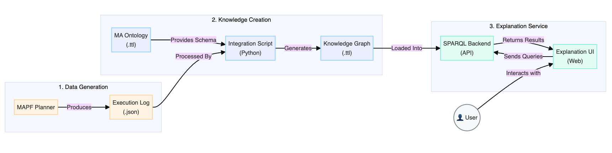

What
This project develops a family of OWL 2 ontologies and supporting tools
for making automated planning decisions explainable. The core contribution is the
Planning Ontology (PO) — a formal vocabulary covering planning domains, problem
instances, planners, plans, and their provenance — that enables SPARQL-queryable explanations
for any automated planner.
The project has evolved across three generations: PO (single-agent), maPO (multi-agent extension), and OMEGA (interactive explanation platform for MAPF). Each generation adds new expressive power while remaining backward-compatible with prior tools.
Why
Automated planners can compute optimal plans, but rarely explain why a plan was chosen over alternatives — which actions were necessary, which were optional, why a particular goal ordering was used. This "black box" nature limits trust and adoption, especially in safety-critical domains like robotics and healthcare.
- No shared vocabulary: Different planners use incompatible representations — no common ground for reasoning about plans across systems.
- No provenance: Classical plan representations don't record why decisions were made — only what was decided.
- No multi-agent support: Prior ontologies addressed single-agent planning only; MAPF explanations require modeling agent interactions, shared resources, and conflict resolution.
How
PO: Planning Ontology (Single-Agent)
PO is an OWL 2 ontology aligned with the PDDL standard, covering:
The PO Tool exposes a web interface where users load a PDDL plan, annotate it with PO metadata, and query explanations in natural language (backed by SPARQL). The tool answers competency questions like "Which actions are causally required?" and "What alternative orderings exist?".

maPO: Multi-Agent Extension
maPO extends PO to multi-agent settings by adding:
- Agent roles: Leader, follower, independent — modeled with OWL properties.
- Shared resources: Locations, corridors, and time windows claimed by agents are tracked as contested fluents.
- Conflict representation: Vertex conflicts, edge conflicts, and their resolutions are first-class ontology objects.
- Inter-agent dependencies: Causal chains between agents' actions — "Agent A waited because Agent B had priority at node X".


OMEGA: Ontology-Driven MAPF Explanation Platform
OMEGA is an interactive demo platform that combines HI-MAPF execution with maPO-grounded explanations. Given any multi-agent path finding run:
- OMEGA captures the execution trace and populates a maPO knowledge graph.
- Users can click any agent, any timestep, or any conflict to get a natural-language explanation.
- Explanations are grounded in ontology concepts — not free-text — ensuring consistency and SPARQL-queryability.
- Supports counterfactual queries: "What would have happened if Agent B had not yielded?"
Results
A user study (n=25) compared OMEGA explanations against two baselines: raw plan traces and natural-language summaries without ontology grounding. OMEGA achieved:
- 95.2% user preference rate over baselines
- 4.40/5 average clarity rating
- 94.39% competency question coverage — users found answers to 94% of their questions about plan decisions
PO ontology coverage was evaluated against a curated set of 47 competency questions spanning plan structure, planner choice, and provenance. PO answered 44/47 questions via SPARQL, with the remaining 3 requiring natural-language post-processing.
Publications
-
Demo · AAAI '26OMEGA: An Ontology-Driven Tool for Explaining Multi-Agent Path Finding
-
Workshop · AAAI '26maPO: A Multi-Agent Planning Ontology
-
Journal · Discover Data '25Building a Plan Ontology to Represent and Exploit Planning Knowledge and Its Applications
-
Workshop · ICAPS '23Building and Using a Planning Ontology from Past Data for Performance Efficiency